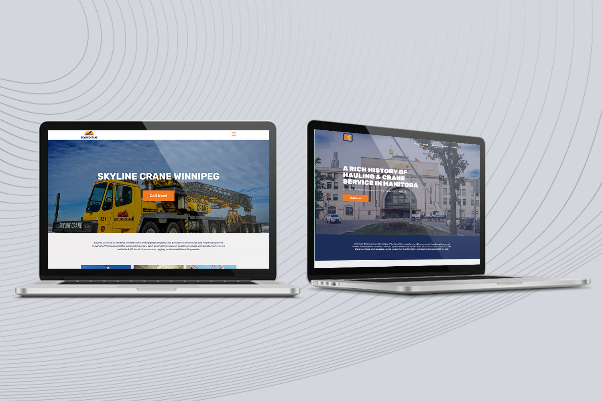

Ken's Crane & Skyline Cranes
Website Design & Build

Website Design & Build
Two different companies owned by the same people, with the same services, and same branding colours - only they need to be designed differently. That was the challenge presented to me when we got these clients. They currently had sites already for each company, one especially in need of a redesign!
Like any project I start with, I always write down the goals that need to be reached and what the client expects. With site mockups, if they have a current site, I go through it and write down what is working and what's not; I think about why even the client thinks they need a redesign. I then write down my ideas for the approach I will take when designing the new site mockups.
They gave us a branding book that had their colours (both companies were to use the same palette) and new logos. With this bit of info already working in our favour I created bold, high contrast, modern sites with an industrial feel for both companies.
With different layouts, Ken’s Crane primary colour being blue and Skyline Crane's primary colour orange, these differences made sure the two companies felt separate. I built both sites using Elementor in WordPress. The client was very pleased with the results!